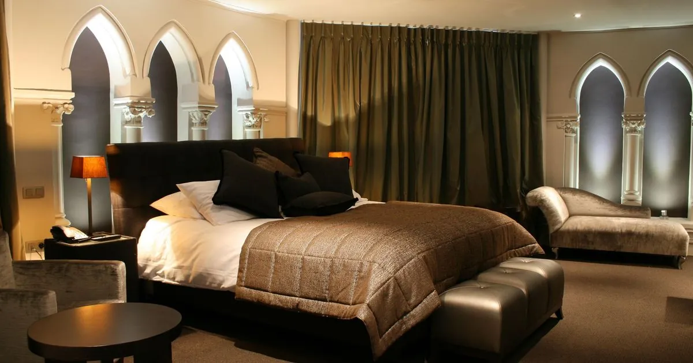
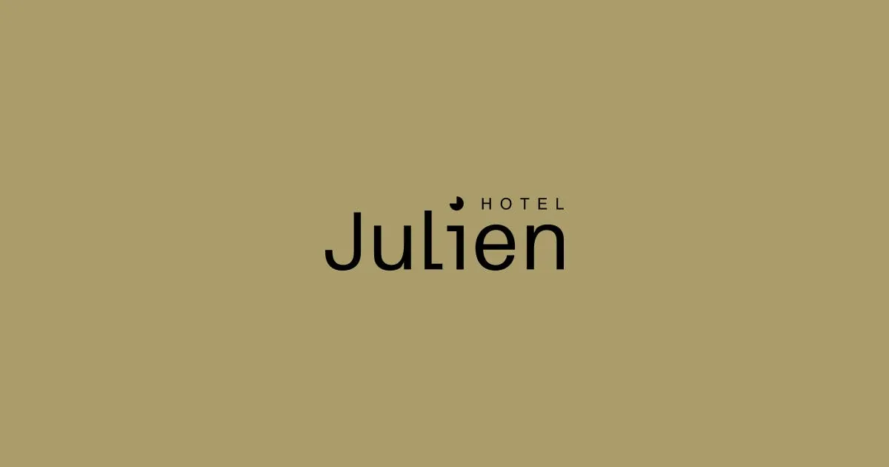

Van der
Valk
Mechelen
Valk
Mechelen
Van der Valk Mechelen
Mechelen · 18 min · 4★
The safer, larger pick. #3 of 11 in Mechelen, 4.0/5 over 657 reviews, 124 rooms in an 1916 historic complex with terrace on the Dyle [21].
Fact 01 — The village
0
hotels
in Duffel.
Three B&Bs. Two pensions. One "other." a-hotel.com lists every accommodation in the municipality, and not one of them is a hotel [5]. The official municipality page recognises exactly one overnight rental [10].
Fact 02 — The nearest bed
1.9 km
to the closest
door you could
sleep behind.
That door belongs to Paradiso Park, an unverified water-park resort with zero published reviews [14] [18]. Tripadvisor's "closest hotels to Nuance" page starts at 3.4 km, in Lier [6].
Fact 03 — The walk home
23 min
in May rain.
After the wine
pairing.
OSRM foot routing from Nuance's exact coordinates, at the rate a person walks (~5 km/h) [14]. Feasible in May. Borderline in November. Unthinkable after the 8-course tasting menu.

The verdict
The restaurant has already solved this. They keep a transport partnership with Taxi Symforosa and four recommended hotels on their own site [3]. The headline pick:
A fully repurposed 15th-century Carmelite church with original stained glass in the rooms — Mechelen city centre, 79 rooms, 4.3/5 with consistent "atmospheric and quiet" feedback [20].
Underground parking €32/night, tourist tax €5.60/night/room on top of the rate [20]. Book the Symforosa pickup against the hotel when you reserve dinner — one phone call collapses two problems.
Footnote — the taxi math
Taxi Symforosa is Nuance's transport partner — booking link is taxisymforosa.be/nuance/ [3]. A one-way from Mechelen centre runs roughly €20–25.
That puts a round-trip at €40–50 — less than one tasting course at the restaurant you came to eat at. Treat it as the last line item on the dinner bill, not a separate decision.
The other three Nuance-recommended hotels [3]
Mechelen · 18 min · 4★
The safer, larger pick. #3 of 11 in Mechelen, 4.0/5 over 657 reviews, 124 rooms in an 1916 historic complex with terrace on the Dyle [21].

Antwerp · 24 min · Boutique
Boutique stay in the old Antwerp core. Only worth it if the rest of the weekend is anchored in Antwerp — the cab fare alone (~€60+) eats the Mechelen–Antwerp price gap [3].
Antwerp · 20 min · 5★
The largest 5-star wellness hotel in Belgium. Reserve when the night is the splurge, not the function — same Antwerp-cab caveat applies [3].
There are two doors inside the 2 km radius. Both come with asterisks. Neither is reviewed enough to bank on without calling first.
Structurally a resort — water park, sauna, spa, bar, free shuttle [18]. On paper the closest, in practice unverified: Booking.com has too few reviews to compute a score. The wellness promise is on the website, not in the data.
⚠ Call info@paradisopark.be / 0493 47 07 07 before banking on it.
Tripadvisor's only listed Duffel guest house. Perfect 5.0/5 — on a single review, with a "Travelers' Choice" badge that's hard to evaluate [7]. Not bookable on major OTAs; you'll need direct contact.
⚠ One review. Direct contact required.
The dark horse · 12 minutes by cab
Shorter taxi than Mechelen, an old centre worth a Sunday-morning walk, and the closest hotel of any kind on Tripadvisor's list — 3.4 km from the restaurant [6].
Modern build with free breakfast and parking, ~$137/night [23]. 10-minute walk to Lier centre once you're awake.
500m from the Zimmertoren in central Lier, ~$118–146/night, breakfast included [22]. Caveat: Lier has no taxi ranks — pre-book the return leg before dinner.
The honest meta-finding
A chef of Nuance's calibre operating in a village means the lodging is structurally a cab ride away. The restaurant knows. They have a cab company on speed-dial. Use it.